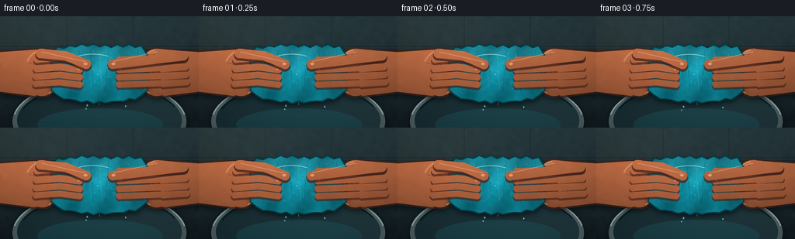
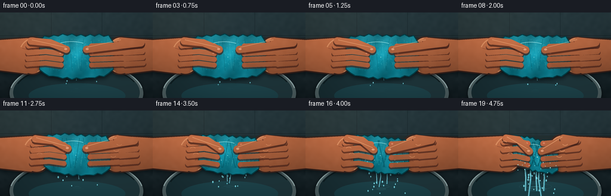
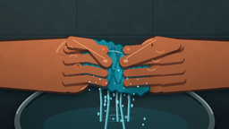

CODING AGENTS AS PIXEL WORLD MODELS
traex/GPT-5.6-Sol · phygen_012
点击播放 · 原生 RGB 像素
逐轮保存的候选
回放视频、检查图与代码变化。
每份候选均可单独播放。实际图片检查记录在下方工具轨迹中。
候选 01播放与检查图
点击播放 · 原生 RGB 像素


展开代码变化
--- 上一保存版本
+++ 本次保存版本
@@ -0,0 +1,345 @@
+from pathlib import Path
+import json, math
+import numpy as np
+from PIL import Image, ImageDraw, ImageFilter
+import cv2
+import artifact_io
+
+# Deterministic procedural close-up: hands progressively wringing a saturated terry towel.
+ROOT = Path(__file__).resolve().parent
+spec = json.loads((ROOT / 'task_spec.json').read_text())
+W, H, N = spec['width'], spec['height'], spec['frames']
+S = 4
+WW, HH = W*S, H*S
+rng = np.random.default_rng(12012)
+
+def sc(v): return int(round(v*S))
+def pts(seq): return [(sc(x), sc(y)) for x,y in seq]
+
+def blend(im, mask, color_or_field, opacity=1.0):
+ a = np.asarray(mask, dtype=np.float32)[...,None] / 255.0 * opacity
+ if not isinstance(color_or_field, np.ndarray):
+ c = np.empty_like(im); c[:] = color_or_field
+ else: c = color_or_field
+ im[:] = im*(1-a) + c*a
+
+def mask_image(): return Image.new('L', (WW,HH), 0)
+
+def shadow(im, mask, radius, offset=(0,0), opacity=.45):
+ m = mask.filter(ImageFilter.GaussianBlur(sc(radius)))
+ if offset != (0,0):
+ z = Image.new('L',(WW,HH),0); z.paste(m,(sc(offset[0]),sc(offset[1]))); m=z
+ blend(im,m,(6,12,15),opacity)
+
+def line_mask(path, width, fill=255):
+ m=mask_image(); d=ImageDraw.Draw(m)
+ p=pts(path); d.line(p,fill=fill,width=sc(width),joint='curve')
+ r=width/2
+ for x,y in (path[0],path[-1]): d.ellipse((sc(x-r),sc(y-r),sc(x+r),sc(y+r)),fill=fill)
+ return m
+
+# Stable low-frequency texture fields.
+small = rng.normal(0,1,(40,72)).astype(np.float32)
+noise = cv2.resize(small,(WW,HH),interpolation=cv2.INTER_CUBIC)
+noise = cv2.GaussianBlur(noise,(0,0),2.2*S)
+yy,xx=np.mgrid[0:HH,0:WW].astype(np.float32)
+X,Y=xx/S,yy/S
+
+# Stable towel-loop samples and droplets.
+loops=[]
+for i in range(210):
+ u=rng.uniform(-.97,.97); v=rng.uniform(-.92,.92)
+ if (u*u*.78+v*v*.85)<1.1:
+ loops.append((u,v,rng.uniform(.45,1.25),rng.uniform(-25,25),rng.uniform(0,1)))
+drops=[]
+for i in range(90):
+ drops.append((rng.uniform(-1,1),rng.uniform(0,1),rng.uniform(.45,1.45),rng.uniform(-1,1),rng.uniform(0,1)))
+
+def make_background():
+ # Cool dark utility-sink surround, softly lit from the upper left.
+ grad=(1-Y/H)[...,None]
+ base=np.zeros((HH,WW,3),np.float32)
+ base[:]=[24,34,38]
+ base += grad*np.array([22,30,31],np.float32)
+ base += noise[...,None]*2.2
+ # tiled backsplash
+ for y in (39,):
+ base[max(0,sc(y)-1):sc(y)+1] *= .66
+ for x in (86,171): base[:sc(46),max(0,sc(x)-1):sc(x)+1]*=.72
+ im=base
+ # soft out-of-focus warm reflection
+ glow=mask_image(); gd=ImageDraw.Draw(glow); gd.ellipse((sc(-35),sc(-48),sc(108),sc(67)),fill=170)
+ glow=glow.filter(ImageFilter.GaussianBlur(sc(25)))
+ blend(im,glow,(120,116,91),.14)
+ # counter lip
+ lip=mask_image(); ImageDraw.Draw(lip).rectangle((0,sc(42),WW,sc(55)),fill=255)
+ lf=np.zeros_like(im); lf[:]=[33,45,48]; lf += (1-X/W)[...,None]*np.array([12,12,9])
+ blend(im,lip,lf,.96)
+ # sink basin (large ellipse below action)
+ rim=mask_image(); ImageDraw.Draw(rim).ellipse((sc(16),sc(82),sc(240),sc(190)),fill=255)
+ shadow(im,rim,5,(0,2),.7)
+ rf=np.zeros_like(im); rf[:]=[78,94,96]; rf += (1-Y/H)[...,None]*np.array([25,29,28])
+ blend(im,rim,rf)
+ inner=mask_image(); ImageDraw.Draw(inner).ellipse((sc(22),sc(87),sc(234),sc(182)),fill=255)
+ inf=np.zeros_like(im); inf[:]=[28,48,53]; inf += (X/W)[...,None]*np.array([10,12,12])
+ blend(im,inner,inf)
+ # water pooled in bottom of sink
+ pool=mask_image(); ImageDraw.Draw(pool).ellipse((sc(48),sc(119),sc(210),sc(161)),fill=180)
+ pf=np.zeros_like(im); pf[:]=[31,82,91]; pf += (1-Y/H)[...,None]*np.array([25,38,40])
+ blend(im,pool,pf,.6)
+ # curved metallic highlights around rim
+ tmp=Image.new('RGBA',(WW,HH),(0,0,0,0)); d=ImageDraw.Draw(tmp)
+ d.arc((sc(16),sc(82),sc(240),sc(190)),190,350,fill=(174,198,198,170),width=sc(2))
+ d.arc((sc(24),sc(87),sc(233),sc(181)),198,338,fill=(15,25,27,180),width=sc(2))
+ rgba=np.asarray(tmp).astype(np.float32); a=rgba[...,3:4]/255
+ im[:]=im*(1-a)+rgba[...,:3]*a
+ return im
+
+def hand_field(side, p):
+ f=np.zeros((HH,WW,3),np.float32); f[:]=[190,111,73]
+ # overhead warm light, plus cooler/lower shadow
+ light=np.clip(1.15-.0042*Y + (.06 if side=='left' else 0),.62,1.2)
+ f *= light[...,None]
+ f += noise[...,None]*2.0
+ return np.clip(f,0,255)
+
+def add_hand_under(im, side, hx, p):
+ # forearm and broad palm are below the cloth; fingers are drawn later above it.
+ m=mask_image(); d=ImageDraw.Draw(m)
+ if side=='left':
+ d.polygon(pts([(-12,47),(hx-9,43),(hx+14,54),(hx+15,89),(hx-10,103),(-12,96)]),fill=255)
+ d.ellipse((sc(hx-25),sc(42),sc(hx+23),sc(103)),fill=255)
+ else:
+ d.polygon(pts([(268,47),(hx+9,43),(hx-14,54),(hx-15,89),(hx+10,103),(268,96)]),fill=255)
+ d.ellipse((sc(hx-23),sc(42),sc(hx+25),sc(103)),fill=255)
+ shadow(im,m,4,(0,4),.7)
+ # dark outline gives hands a crisp photographic silhouette
+ outline=m.filter(ImageFilter.MaxFilter(sc(2)*2+1))
+ blend(im,outline,(73,40,31),.65)
+ blend(im,m,hand_field(side,p))
+ # palm edge glow and wrist creases
+ ov=Image.new('RGBA',(WW,HH),(0,0,0,0)); od=ImageDraw.Draw(ov)
+ if side=='left':
+ od.arc((sc(hx-24),sc(43),sc(hx+24),sc(102)),210,70,fill=(245,178,128,120),width=sc(2))
+ od.arc((sc(hx-21),sc(57),sc(hx+5),sc(95)),285,55,fill=(103,53,40,110),width=sc(1.2))
+ od.line(pts([(hx-18,60),(hx-7,63)]),fill=(105,54,42,105),width=sc(1))
+ else:
+ od.arc((sc(hx-24),sc(43),sc(hx+24),sc(102)),110,330,fill=(245,178,128,110),width=sc(2))
+ od.arc((sc(hx-5),sc(57),sc(hx+21),sc(95)),125,235,fill=(103,53,40,110),width=sc(1.2))
+ od.line(pts([(hx+18,60),(hx+7,63)]),fill=(105,54,42,105),width=sc(1))
+ rgba=np.asarray(ov).astype(np.float32); a=rgba[...,3:4]/255
+ im[:]=im*(1-a)+rgba[...,:3]*a
+
+def towel_geometry(p):
+ cx=128 + 1.2*math.sin(p*8)
+ halfw=61-24*p
+ halfh=33-8*p
+ cy=71+2.5*p
+ twist=8*p
+ poly=[]
+ # scalloped irregular upper and lower contour, denser points for softness
+ for k in range(17):
+ u=-1+2*k/16
+ envelope=(max(0,1-u*u))**.18
+ wav=1.8*math.sin(3.2*k+0.7)+.8*math.sin(7.1*k)
+ y=cy-halfh*(.68+.30*envelope)+wav + twist*u
+ x=cx+halfw*u
+ poly.append((x,y))
+ for k in range(16,-1,-1):
+ u=-1+2*k/16
+ envelope=(max(0,1-u*u))**.16
+ wav=1.7*math.sin(2.7*k+1.5)+.7*math.sin(6.3*k)
+ # saturated towel sags; squeezing shortens the sag but makes a pointed wet center
+ sag=(1-p)*7*(1-u*u) + p*3*(1-u*u)
+ y=cy+halfh*(.69+.29*envelope)+wav+sag + twist*u
+ x=cx+halfw*u
+ poly.append((x,y))
+ return cx,cy,halfw,halfh,twist,poly
+
+def add_water(im,p,t,geom):
+ cx,cy,halfw,halfh,twist,poly=geom
+ q=.05 + .95*(p**1.7)
+ bottom=cy+halfh*.96+3
+ # expanding wet impact rings in sink
+ rings=Image.new('RGBA',(WW,HH),(0,0,0,0)); rd=ImageDraw.Draw(rings)
+ for j in range(3):
+ phase=(t*1.8+j*.31)%1
+ rx=(8+phase*24)*(0.35+.65*q); ry=rx*.20
+ alpha=int((1-phase)*95*q)
+ rd.ellipse((sc(cx-rx),sc(128+j*2-ry),sc(cx+rx),sc(128+j*2+ry)),outline=(112,220,231,alpha),width=sc(.7))
+ rgba=np.asarray(rings).astype(np.float32); a=rgba[...,3:4]/255; im[:]=im*(1-a)+rgba[...,:3]*a
+ # main rivulets become rapidly thicker and longer near the end
+ stream_count=1+int(4*q)
+ for j in range(stream_count):
+ ox=cx+(j-(stream_count-1)/2)*(5.2+halfw*.07)+2*math.sin(j*2.1+t*4)
+ length=7+q*(27+10*((j%2)))
+ x2=ox+math.sin(t*3+j*1.7)*(1.4+2*q)
+ path=[(ox,bottom-2),(ox+math.sin(j+t*2),bottom+length*.35),(x2,bottom+length)]
+ m=line_mask(path, .7+1.7*q)
+ blend(im,m,(73,185,207),.72)
+ hi=line_mask([(x-.35,y) for x,y in path],.35+.35*q)
+ blend(im,hi,(198,244,244),.78)
+ # airborne beads and forceful side sprays. Stable population; phases move downward.
+ active=2+int(34*q)
+ for i in range(active):
+ u,phase0,size,side,seed=drops[i]
+ phase=(phase0+t*(.7+q*.9)+i*.037)%1
+ age=phase
+ ox=cx+u*halfw*.70
+ lateral=side*(4+18*q)*age
+ x=ox+lateral+3*math.sin(i*4.3+t*5)*age
+ y=bottom+2 + age*(13+40*q) + 15*q*age*age
+ if y>141: continue
+ r=(.45+size*.65)*(1-.28*age)
+ dm=mask_image(); dd=ImageDraw.Draw(dm)
+ dd.ellipse((sc(x-r),sc(y-r*1.5),sc(x+r),sc(y+r*1.5)),fill=230)
+ blend(im,dm,(117,218,231),.92)
+ if r>.75:
+ hm=mask_image(); ImageDraw.Draw(hm).ellipse((sc(x-r*.35),sc(y-r),sc(x+r*.05),sc(y-r*.45)),fill=255)
+ blend(im,hm,(235,255,252),.85)
+
+def add_towel(im,p,geom):
+ cx,cy,halfw,halh,twist,poly=geom
+ m=mask_image(); d=ImageDraw.Draw(m); d.polygon(pts(poly),fill=255)
+ shadow(im,m,4,(0,4),.78)
+ edge=m.filter(ImageFilter.MaxFilter(sc(1.3)*2+1))
+ blend(im,edge,(8,64,72),.95)
+ # wet turquoise material: darker as pressure gathers folds
+ radial=np.sqrt(((X-cx)/(halfw+1))**2+((Y-cy)/(halh+1))**2)
+ shade=1.08-.26*np.clip(radial,0,1) + .08*np.cos((X-cx)*.15+(Y-cy)*.07+4*p)
+ field=np.zeros_like(im); field[:]=[25,139,157]
+ field*=shade[...,None]
+ field += noise[...,None]*4.5
+ # top-left specular illumination on soaked fibers
+ field += np.clip((cy-Y)/45,-.1,.22)[...,None]*np.array([35,42,40])
+ blend(im,m,np.clip(field,0,255))
+ # Compression folds, diagonal wring ridges, all clipped to cloth silhouette.
+ fold=mask_image(); fd=ImageDraw.Draw(fold)
+ nfold=6+int(5*p)
+ for j in range(nfold):
+ u=-.78+1.56*j/max(1,nfold-1)
+ x=cx+u*halfw
+ slant=(9+18*p)*(1 if j%2==0 else -1)
+ fd.line(pts([(x-slant*.28,cy-halh*.82),(x+slant*.28,cy+halh*.82)]),fill=90+int(70*p),width=sc(.8+1.4*p))
+ fold=np.minimum(np.asarray(fold),np.asarray(m)).astype(np.uint8)
+ blend(im,Image.fromarray(fold),(4,66,76),.76)
+ # Narrow glossy ridges alongside folds.
+ shine=mask_image(); sd=ImageDraw.Draw(shine)
+ for j in range(5+int(4*p)):
+ u=-.7+1.4*j/max(1,4+int(4*p))
+ x=cx+u*halfw+1.5
+ slant=(8+16*p)*(1 if j%2==0 else -1)
+ sd.line(pts([(x-slant*.24,cy-halh*.7),(x+slant*.24,cy+halh*.7)]),fill=110,width=sc(.55))
+ shine=np.minimum(np.asarray(shine),np.asarray(m)).astype(np.uint8)
+ blend(im,Image.fromarray(shine),(101,218,221),.7)
+ # Hundreds of visible terry loops stay attached in cloth coordinates.
+ darkloops=Image.new('RGBA',(WW,HH),(0,0,0,0)); ld=ImageDraw.Draw(darkloops)
+ for u,v,r,ang,z in loops:
+ # edge-aware warped cloth coordinates
+ x=cx+u*halfw + v*twist*.24
+ y=cy+v*halh*.88 + u*twist
+ if ((u*u+.82*v*v)>1.02): continue
+ rr=r*(.95-.22*p)
+ col=(5,74,83,90) if z<.55 else (126,226,225,100)
+ bbox=(sc(x-rr),sc(y-rr*.58),sc(x+rr),sc(y+rr*.58))
+ ld.arc(bbox,190,520,fill=col,width=max(1,sc(.35)))
+ rgba=np.asarray(darkloops).astype(np.float32)
+ clip=(np.asarray(m).astype(np.float32)/255)[...,None]
+ a=rgba[...,3:4]/255*clip; im[:]=im*(1-a)+rgba[...,:3]*a
+ # Strong wet highlights and beads on the towel.
+ wet=Image.new('RGBA',(WW,HH),(0,0,0,0)); wd=ImageDraw.Draw(wet)
+ wd.arc((sc(cx-halfw*.72),sc(cy-halh*.68),sc(cx+halfw*.45),sc(cy+halh*.35)),202,304,fill=(202,251,247,135),width=sc(1.1))
+ for k in range(6+int(5*p)):
+ u=-.72+1.44*((k*.618)%1); v=-.6+1.1*((k*.414)%1)
+ x=cx+u*halfw; y=cy+v*halh
+ rr=.55+(.35 if k%3==0 else 0)
+ wd.ellipse((sc(x-rr),sc(y-rr),sc(x+rr),sc(y+rr)),fill=(220,255,251,150))
+ rgba=np.asarray(wet).astype(np.float32); a=rgba[...,3:4]/255*clip; im[:]=im*(1-a)+rgba[...,:3]*a
+ return m
+
+def add_fingers(im,side,hx,p,geom):
+ cx,cy,halfw,halh,twist,poly=geom
+ sign=1 if side=='left' else -1
+ # Four curled fingers cross the near face; closer together under high pressure.
+ ys=[55.5,66.5,77.5,88.5]
+ for k,y0 in enumerate(ys):
+ y=y0+(k-1.5)*p*.65 + (1.3*math.sin(k*1.4+p*5))
+ startx=hx-sign*(7+k*.7)
+ endx=cx-sign*(halfw*(.42-.07*p))
+ # bowed trajectory suggests fingers curling into the towel
+ path=[(startx,y-sign*0),(startx+sign*(endx-startx)*.54,y-2.2),(endx,y+1.1+1.0*p)]
+ sh=line_mask([(x,y+2.2) for x,y in path],10.4-1.0*k/3)
+ blend(im,sh,(71,37,30),.65)
+ fm=line_mask(path,9.3-1.0*k/3)
+ blend(im,fm,hand_field(side,p))
+ # fingertip pressure blush grows strongly during final squeeze
+ tip=mask_image(); td=ImageDraw.Draw(tip); rr=(4.2-.3*k)
+ td.ellipse((sc(endx-rr),sc(path[-1][1]-rr),sc(endx+rr),sc(path[-1][1]+rr)),fill=255)
+ blend(im,tip,(207,94,72),.12+.20*p*p)
+ # small nail rim visible on index/middle fingertip
+ if k<2:
+ nail=mask_image(); nd=ImageDraw.Draw(nail)
+ nx=endx-sign*1.25; ny=path[-1][1]-.45
+ nd.ellipse((sc(nx-1.6),sc(ny-1.15),sc(nx+1.6),sc(ny+1.15)),fill=190)
+ blend(im,nail,(244,178,143),.62)
+ # Thumb presses down diagonally from above and visibly flattens the upper towel.
+ sy=48-1.4*p; sx=hx-sign*3
+ ex=cx-sign*(halfw*.28)
+ path=[(sx,sy),(sx+sign*(ex-sx)*.55,sy+3.0),(ex,cy-9+4*p)]
+ sh=line_mask([(x,y+2.5) for x,y in path],13.7); blend(im,sh,(65,34,28),.7)
+ tm=line_mask(path,12.2); blend(im,tm,hand_field(side,p))
+ # thumb nail, highlight, and pressure-red pad
+ nx=ex-sign*1.0; ny=path[-1][1]-.7
+ nm=mask_image(); nd=ImageDraw.Draw(nm); nd.ellipse((sc(nx-2.5),sc(ny-1.65),sc(nx+2.5),sc(ny+1.65)),fill=220)
+ blend(im,nm,(245,183,149),.72)
+ hm=line_mask([(sx+sign*2,sy-2),(ex-sign*2,ny-3)],1.0)
+ blend(im,hm,(252,193,145),.50)
+ # Tendon/knuckle highlights intensify with force.
+ if p>.18:
+ ov=Image.new('RGBA',(WW,HH),(0,0,0,0)); od=ImageDraw.Draw(ov)
+ for k in range(3):
+ x=hx+sign*(-6+k*5); y=55+k*10
+ od.arc((sc(x-5),sc(y-4),sc(x+5),sc(y+4)),205 if side=='left' else 25,335 if side=='left' else 155,fill=(252,184,134,int(45+80*p)),width=sc(1))
+ rgba=np.asarray(ov).astype(np.float32); a=rgba[...,3:4]/255; im[:]=im*(1-a)+rgba[...,:3]*a
+
+def frame(index):
+ t=index/(N-1)
+ # Long restrained setup, then rapidly increasing force: timelapse acceleration.
+ p=.08*t + .92*(t**2.65)
+ # tiny compression pulse at the very end makes the exertion feel forceful
+ if index>=16: p=min(1,p+.018*math.sin((index-16)*2.4))
+ im=make_background()
+ geom=towel_geometry(p)
+ hxL=55+28*p; hxR=201-28*p
+ # Water is behind the object and therefore appears to emerge from its lower edge.
+ add_water(im,p,t,geom)
+ add_hand_under(im,'left',hxL,p)
+ add_hand_under(im,'right',hxR,p)
+ add_towel(im,p,geom)
+ add_fingers(im,'left',hxL,p,geom)
+ add_fingers(im,'right',hxR,p,geom)
+ # Fine high-speed spray sits in foreground during the forceful last squeeze.
+ if p>.48:
+ spray=Image.new('RGBA',(WW,HH),(0,0,0,0)); sd=ImageDraw.Draw(spray)
+ cx,cy,hw,hh,tw,po=geom
+ q=(p-.48)/.52
+ for k in range(int(15*q)):
+ ang=-2.65 + (k/(max(1,int(15*q)-1)))*2.15
+ if k%2: ang=math.pi-ang
+ length=(5+18*((k*.71)%1))*q
+ ox=cx + (1 if k%2 else -1)*hw*.55; oy=cy+hh*.35
+ x=ox+math.cos(ang)*length; y=oy+abs(math.sin(ang))*length
+ r=.45+.45*((k*.37)%1)
+ sd.ellipse((sc(x-r),sc(y-r),sc(x+r),sc(y+r)),fill=(163,235,240,int(80+130*q)))
+ rgba=np.asarray(spray).astype(np.float32); a=rgba[...,3:4]/255; im[:]=im*(1-a)+rgba[...,:3]*a
+ # Filmic vignette and a touch of local contrast.
+ r=np.sqrt(((X-W/2)/(W*.72))**2+((Y-H/2)/(H*.8))**2)
+ vig=np.clip(1-.24*np.maximum(0,r-.34),.73,1)
+ im*=vig[...,None]
+ im=np.clip((im-125)*1.055+125,0,255).astype(np.uint8)
+ out=Image.fromarray(im).resize((W,H),Image.Resampling.LANCZOS)
+ return np.asarray(out.convert('RGB'),dtype=np.uint8)
+
+frames=np.stack([frame(i) for i in range(N)],axis=0)
+artifact_io.save(frames,ROOT)
+print('saved',frames.shape,frames.dtype,'range',frames.min(),frames.max())
可观测工具轨迹
实际执行的命令与返回图片。
命令 1exit 0
/bin/bash -lc "cat prompt.txt && printf '\\n--- GENERATION_RULES ---\\n' && cat GENERATION_RULES.md"
命令 2exit 0
/bin/bash -lc "cat task_spec.json && printf '\\n--- FILES ---\\n' && find . -maxdepth 2 -type f -printf '%p\\n' | sort"
命令 3exit 0
/bin/bash -lc "which ffmpeg; which python3; python3 - <<'PY' mods=['PIL','numpy','cv2','imageio','moviepy','scipy','cairo','manim','moderngl'] for m in mods: try: x=__import__(m); print(m,'OK',getattr(x,'__version__','')) except Exception as e: print(m,'NO',str(e)[:100]) PY"
命令 4exit 0
/bin/bash -lc 'cat artifact_io.py'
命令 5exit 0
/bin/bash -lc "cat > generate.py <<'PY'
from pathlib import Path
import json, math
import numpy as np
from PIL import Image, ImageDraw, ImageFilter
import cv2
import artifact_io
# Deterministic procedural close-up: hands progressively wringing a saturated terry towel.
ROOT = Path(__file__).resolve().parent
spec = json.loads((ROOT / 'task_spec.json').read_text())
W, H, N = spec['width'], spec['height'], spec['frames']
S = 4
WW, HH = W*S, H*S
rng = np.random.default_rng(12012)
def sc(v): return int(round(v*S))
def pts(seq): return [(sc(x), sc(y)) for x,y in seq]
def blend(im, mask, color_or_field, opacity=1.0):
a = np.asarray(mask, dtype=np.float32)[...,None] / 255.0 * opacity
if not isinstance(color_or_field, np.ndarray):
c = np.empty_like(im); c[:] = color_or_field
else: c = color_or_field
im[:] = im*(1-a) + c*a
def mask_image(): return Image.new('L', (WW,HH), 0)
def shadow(im, mask, radius, offset=(0,0), opacity=.45):
m = mask.filter(ImageFilter.GaussianBlur(sc(radius)))
if offset "'!= (0,0):
z = Image.new('"'L',(WW,HH),0); z.paste(m,(sc(offset[0]),sc(offset[1]))); m=z
blend(im,m,(6,12,15),opacity)
def line_mask(path, width, fill=255):
m=mask_image(); d=ImageDraw.Draw(m)
p=pts(path); d.line(p,fill=fill,width=sc(width),joint='curve')
r=width/2
for x,y in (path[0],path[-1]): d.ellipse((sc(x-r),sc(y-r),sc(x+r),sc(y+r)),fill=fill)
return m
# Stable low-frequency texture fields.
small = rng.normal(0,1,(40,72)).astype(np.float32)
noise = cv2.resize(small,(WW,HH),interpolation=cv2.INTER_CUBIC)
noise = cv2.GaussianBlur(noise,(0,0),2.2*S)
yy,xx=np.mgrid[0:HH,0:WW].astype(np.float32)
X,Y=xx/S,yy/S
# Stable towel-loop samples and droplets.
loops=[]
for i in range(210):
u=rng.uniform(-.97,.97); v=rng.uniform(-.92,.92)
if (u*u*.78+v*v*.85)<1.1:
loops.append((u,v,rng.uniform(.45,1.25),rng.uniform(-25,25),rng.uniform(0,1)))
drops=[]
for i in range(90):
drops.append((rng.uniform(-1,1),rng.uniform(0,1),rng.uniform(.45,1.45),rng.uniform(-1,1),rng.uniform(0,1)))
def make_background():
# Cool dark utility-sink surround, softly lit from the upper left.
grad=(1-Y/H)[...,None]
base=np.zeros((HH,WW,3),np.float32)
base[:]=[24,34,38]
base += grad*np.array([22,30,31],np.float32)
base += noise[...,None]*2.2
# tiled backsplash
for y in (39,):
base[max(0,sc(y)-1):sc(y)+1] *= .66
for x in (86,171): base[:sc(46),max(0,sc(x)-1):sc(x)+1]*=.72
im=base
# soft out-of-focus warm reflection
glow=mask_image(); gd=ImageDraw.Draw(glow); gd.ellipse((sc(-35),sc(-48),sc(108),sc(67)),fill=170)
glow=glow.filter(ImageFilter.GaussianBlur(sc(25)))
blend(im,glow,(120,116,91),.14)
# counter lip
lip=mask_image(); ImageDraw.Draw(lip).rectangle((0,sc(42),WW,sc(55)),fill=255)
lf=np.zeros_like(im); lf[:]=[33,45,48]; lf += (1-X/W)[...,None]*np.array([12,12,9])
blend(im,lip,lf,.96)
# sink basin (large ellipse below action)
rim=mask_image(); ImageDraw.Draw(rim).ellipse((sc(16),sc(82),sc(240),sc(190)),fill=255)
shadow(im,rim,5,(0,2),.7)
rf=np.zeros_like(im); rf[:]=[78,94,96]; rf += (1-Y/H)[...,None]*np.array([25,29,28])
blend(im,rim,rf)
inner=mask_image(); ImageDraw.Draw(inner).ellipse((sc(22),sc(87),sc(234),sc(182)),fill=255)
inf=np.zeros_like(im); inf[:]=[28,48,53]; inf += (X/W)[...,None]*np.array([10,12,12])
blend(im,inner,inf)
# water pooled in bottom of sink
pool=mask_image(); ImageDraw.Draw(pool).ellipse((sc(48),sc(119),sc(210),sc(161)),fill=180)
pf=np.zeros_like(im); pf[:]=[31,82,91]; pf += (1-Y/H)[...,None]*np.array([25,38,40])
blend(im,pool,pf,.6)
# curved metallic highlights around rim
tmp=Image.new('RGBA',(WW,HH),(0,0,0,0)); d=ImageDraw.Draw(tmp)
d.arc((sc(16),sc(82),sc(240),sc(190)),190,350,fill=(174,198,198,170),width=sc(2))
d.arc((sc(24),sc(87),sc(233),sc(181)),198,338,fill=(15,25,27,180),width=sc(2))
rgba=np.asarray(tmp).astype(np.float32); a=rgba[...,3:4]/255
im[:]=im*(1-a)+rgba[...,:3]*a
return im
def hand_field(side, p):
f=np.zeros((HH,WW,3),np.float32); f[:]=[190,111,73]
# overhead warm light, plus cooler/lower shadow
light=np.clip(1.15-.0042*Y + (.06 if side=='left' else 0),.62,1.2)
f *= light[...,None]
f += noise[...,None]*2.0
return np.clip(f,0,255)
def add_hand_under(im, side, hx, p):
# forearm and broad palm are below the cloth; fingers are drawn later above it.
m=mask_image(); d=ImageDraw.Draw(m)
if side=='left':
d.polygon(pts([(-12,47),(hx-9,43),(hx+14,54),(hx+15,89),(hx-10,103),(-12,96)]),fill=255)
d.ellipse((sc(hx-25),sc(42),sc(hx+23),sc(103)),fill=255)
else:
d.polygon(pts([(268,47),(hx+9,43),(hx-14,54),(hx-15,89),(hx+10,103),(268,96)]),fill=255)
d.ellipse((sc(hx-23),sc(42),sc(hx+25),sc(103)),fill=255)
shadow(im,m,4,(0,4),.7)
# dark outline gives hands a crisp photographic silhouette
outline=m.filter(ImageFilter.MaxFilter(sc(2)*2+1))
blend(im,outline,(73,40,31),.65)
blend(im,m,hand_field(side,p))
# palm edge glow and wrist creases
ov=Image.new('RGBA',(WW,HH),(0,0,0,0)); od=ImageDraw.Draw(ov)
if side=='left':
od.arc((sc(hx-24),sc(43),sc(hx+24),sc(102)),210,70,fill=(245,178,128,120),width=sc(2))
od.arc((sc(hx-21),sc(57),sc(hx+5),sc(95)),285,55,fill=(103,53,40,110),width=sc(1.2))
od.line(pts([(hx-18,60),(hx-7,63)]),fill=(105,54,42,105),width=sc(1))
else:
od.arc((sc(hx-24),sc(43),sc(hx+24),sc(102)),110,330,fill=(245,178,128,110),width=sc(2))
od.arc((sc(hx-5),sc(57),sc(hx+21),sc(95)),125,235,fill=(103,53,40,110),width=sc(1.2))
od.line(pts([(hx+18,60),(hx+7,63)]),fill=(105,54,42,105),width=sc(1))
rgba=np.asarray(ov).astype(np.float32); a=rgba[...,3:4]/255
im[:]=im*(1-a)+rgba[...,:3]*a
def towel_geometry(p):
cx=128 + 1.2*math.sin(p*8)
halfw=61-24*p
halfh=33-8*p
cy=71+2.5*p
twist=8*p
poly=[]
# scalloped irregular upper and lower contour, denser points for softness
for k in range(17):
u=-1+2*k/16
envelope=(max(0,1-u*u))**.18
wav=1.8*math.sin(3.2*k+0.7)+.8*math.sin(7.1*k)
y=cy-halfh*(.68+.30*envelope)+wav + twist*u
x=cx+halfw*u
poly.append((x,y))
for k in range(16,-1,-1):
u=-1+2*k/16
envelope=(max(0,1-u*u))**.16
wav=1.7*math.sin(2.7*k+1.5)+.7*math.sin(6.3*k)
# saturated towel sags; squeezing shortens the sag but makes a pointed wet center
sag=(1-p)*7*(1-u*u) + p*3*(1-u*u)
y=cy+halfh*(.69+.29*envelope)+wav+sag + twist*u
x=cx+halfw*u
poly.append((x,y))
return cx,cy,halfw,halfh,twist,poly
def add_water(im,p,t,geom):
cx,cy,halfw,halfh,twist,poly=geom
q=.05 + .95*(p**1.7)
bottom=cy+halfh*.96+3
# expanding wet impact rings in sink
rings=Image.new('RGBA',(WW,HH),(0,0,0,0)); rd=ImageDraw.Draw(rings)
for j in range(3):
phase=(t*1.8+j*.31)%1
rx=(8+phase*24)*(0.35+.65*q); ry=rx*.20
alpha=int((1-phase)*95*q)
rd.ellipse((sc(cx-rx),sc(128+j*2-ry),sc(cx+rx),sc(128+j*2+ry)),outline=(112,220,231,alpha),width=sc(.7))
rgba=np.asarray(rings).astype(np.float32); a=rgba[...,3:4]/255; im[:]=im*(1-a)+rgba[...,:3]*a
# main rivulets become rapidly thicker and longer near the end
stream_count=1+int(4*q)
for j in range(stream_count):
ox=cx+(j-(stream_count-1)/2)*(5.2+halfw*.07)+2*math.sin(j*2.1+t*4)
length=7+q*(27+10*((j%2)))
x2=ox+math.sin(t*3+j*1.7)*(1.4+2*q)
path=[(ox,bottom-2),(ox+math.sin(j+t*2),bottom+length*.35),(x2,bottom+length)]
m=line_mask(path, .7+1.7*q)
blend(im,m,(73,185,207),.72)
hi=line_mask([(x-.35,y) for x,y in path],.35+.35*q)
blend(im,hi,(198,244,244),.78)
# airborne beads and forceful side sprays. Stable population; phases move downward.
active=2+int(34*q)
for i in range(active):
u,phase0,size,side,seed=drops[i]
phase=(phase0+t*(.7+q*.9)+i*.037)%1
age=phase
ox=cx+u*halfw*.70
lateral=side*(4+18*q)*age
x=ox+lateral+3*math.sin(i*4.3+t*5)*age
y=bottom+2 + age*(13+40*q) + 15*q*age*age
if y>141: continue
r=(.45+size*.65)*(1-.28*age)
dm=mask_image(); dd=ImageDraw.Draw(dm)
dd.ellipse((sc(x-r),sc(y-r*1.5),sc(x+r),sc(y+r*1.5)),fill=230)
blend(im,dm,(117,218,231),.92)
if r>.75:
hm=mask_image(); ImageDraw.Draw(hm).ellipse((sc(x-r*.35),sc(y-r),sc(x+r*.05),sc(y-r*.45)),fill=255)
blend(im,hm,(235,255,252),.85)
def add_towel(im,p,geom):
cx,cy,halfw,halh,twist,poly=geom
m=mask_image(); d=ImageDraw.Draw(m); d.polygon(pts(poly),fill=255)
shadow(im,m,4,(0,4),.78)
edge=m.filter(ImageFilter.MaxFilter(sc(1.3)*2+1))
blend(im,edge,(8,64,72),.95)
# wet turquoise material: darker as pressure gathers folds
radial=np.sqrt(((X-cx)/(halfw+1))**2+((Y-cy)/(halh+1))**2)
shade=1.08-.26*np.clip(radial,0,1) + .08*np.cos((X-cx)*.15+(Y-cy)*.07+4*p)
field=np.zeros_like(im); field[:]=[25,139,157]
field*=shade[...,None]
field += noise[...,None]*4.5
# top-left specular illumination on soaked fibers
field += np.clip((cy-Y)/45,-.1,.22)[...,None]*np.array([35,42,40])
blend(im,m,np.clip(field,0,255))
# Compression folds, diagonal wring ridges, all clipped to cloth silhouette.
fold=mask_image(); fd=ImageDraw.Draw(fold)
nfold=6+int(5*p)
for j in range(nfold):
u=-.78+1.56*j/max(1,nfold-1)
x=cx+u*halfw
slant=(9+18*p)*(1 if j%2==0 else -1)
fd.line(pts([(x-slant*.28,cy-halh*.82),(x+slant*.28,cy+halh*.82)]),fill=90+int(70*p),width=sc(.8+1.4*p))
fold=np.minimum(np.asarray(fold),np.asarray(m)).astype(np.uint8)
blend(im,Image.fromarray(fold),(4,66,76),.76)
# Narrow glossy ridges alongside folds.
shine=mask_image(); sd=ImageDraw.Draw(shine)
for j in range(5+int(4*p)):
u=-.7+1.4*j/max(1,4+int(4*p))
x=cx+u*halfw+1.5
slant=(8+16*p)*(1 if j%2==0 else -1)
sd.line(pts([(x-slant*.24,cy-halh*.7),(x+slant*.24,cy+halh*.7)]),fill=110,width=sc(.55))
shine=np.minimum(np.asarray(shine),np.asarray(m)).astype(np.uint8)
blend(im,Image.fromarray(shine),(101,218,221),.7)
# Hundreds of visible terry loops stay attached in cloth coordinates.
darkloops=Image.new('RGBA',(WW,HH),(0,0,0,0)); ld=ImageDraw.Draw(darkloops)
for u,v,r,ang,z in loops:
# edge-aware warped cloth coordinates
x=cx+u*halfw + v*twist*.24
y=cy+v*halh*.88 + u*twist
if ((u*u+.82*v*v)>1.02): continue
rr=r*(.95-.22*p)
col=(5,74,83,90) if z<.55 else (126,226,225,100)
bbox=(sc(x-rr),sc(y-rr*.58),sc(x+rr),sc(y+rr*.58))
ld.arc(bbox,190,520,fill=col,width=max(1,sc(.35)))
rgba=np.asarray(darkloops).astype(np.float32)
clip=(np.asarray(m).astype(np.float32)/255)[...,None]
a=rgba[...,3:4]/255*clip; im[:]=im*(1-a)+rgba[...,:3]*a
# Strong wet highlights and beads on the towel.
wet=Image.new('RGBA',(WW,HH),(0,0,0,0)); wd=ImageDraw.Draw(wet)
wd.arc((sc(cx-halfw*.72),sc(cy-halh*.68),sc(cx+halfw*.45),sc(cy+halh*.35)),202,304,fill=(202,251,247,135),width=sc(1.1))
for k in range(6+int(5*p)):
u=-.72+1.44*((k*.618)%1); v=-.6+1.1*((k*.414)%1)
x=cx+u*halfw; y=cy+v*halh
rr=.55+(.35 if k%3==0 else 0)
wd.ellipse((sc(x-rr),sc(y-rr),sc(x+rr),sc(y+rr)),fill=(220,255,251,150))
rgba=np.asarray(wet).astype(np.float32); a=rgba[...,3:4]/255*clip; im[:]=im*(1-a)+rgba[...,:3]*a
return m
def add_fingers(im,side,hx,p,geom):
cx,cy,halfw,halh,twist,poly=geom
sign=1 if side=='left' else -1
# Four curled fingers cross the near face; closer together under high pressure.
ys=[55.5,66.5,77.5,88.5]
for k,y0 in enumerate(ys):
y=y0+(k-1.5)*p*.65 + (1.3*math.sin(k*1.4+p*5))
startx=hx-sign*(7+k*.7)
endx=cx-sign*(halfw*(.42-.07*p))
# bowed trajectory suggests fingers curling into the towel
path=[(startx,y-sign*0),(startx+sign*(endx-startx)*.54,y-2.2),(endx,y+1.1+1.0*p)]
sh=line_mask([(x,y+2.2) for x,y in path],10.4-1.0*k/3)
blend(im,sh,(71,37,30),.65)
fm=line_mask(path,9.3-1.0*k/3)
blend(im,fm,hand_field(side,p))
# fingertip pressure blush grows strongly during final squeeze
tip=mask_image(); td=ImageDraw.Draw(tip); rr=(4.2-.3*k)
td.ellipse((sc(endx-rr),sc(path[-1][1]-rr),sc(endx+rr),sc(path[-1][1]+rr)),fill=255)
blend(im,tip,(207,94,72),.12+.20*p*p)
# small nail rim visible on index/middle fingertip
if k<2:
nail=mask_image(); nd=ImageDraw.Draw(nail)
nx=endx-sign*1.25; ny=path[-1][1]-.45
nd.ellipse((sc(nx-1.6),sc(ny-1.15),sc(nx+1.6),sc(ny+1.15)),fill=190)
blend(im,nail,(244,178,143),.62)
# Thumb presses down diagonally from above and visibly flattens the upper towel.
sy=48-1.4*p; sx=hx-sign*3
ex=cx-sign*(halfw*.28)
path=[(sx,sy),(sx+sign*(ex-sx)*.55,sy+3.0),(ex,cy-9+4*p)]
sh=line_mask([(x,y+2.5) for x,y in path],13.7); blend(im,sh,(65,34,28),.7)
tm=line_mask(path,12.2); blend(im,tm,hand_field(side,p))
# thumb nail, highlight, and pressure-red pad
nx=ex-sign*1.0; ny=path[-1][1]-.7
nm=mask_image(); nd=ImageDraw.Draw(nm); nd.ellipse((sc(nx-2.5),sc(ny-1.65),sc(nx+2.5),sc(ny+1.65)),fill=220)
blend(im,nm,(245,183,149),.72)
hm=line_mask([(sx+sign*2,sy-2),(ex-sign*2,ny-3)],1.0)
blend(im,hm,(252,193,145),.50)
# Tendon/knuckle highlights intensify with force.
if p>.18:
ov=Image.new('RGBA',(WW,HH),(0,0,0,0)); od=ImageDraw.Draw(ov)
for k in range(3):
x=hx+sign*(-6+k*5); y=55+k*10
od.arc((sc(x-5),sc(y-4),sc(x+5),sc(y+4)),205 if side=='left' else 25,335 if side=='left' else 155,fill=(252,184,134,int(45+80*p)),width=sc(1))
rgba=np.asarray(ov).astype(np.float32); a=rgba[...,3:4]/255; im[:]=im*(1-a)+rgba[...,:3]*a
def frame(index):
t=index/(N-1)
# Long restrained setup, then rapidly increasing force: timelapse acceleration.
p=.08*t + .92*(t**2.65)
# tiny compression pulse at the very end makes the exertion feel forceful
if index>=16: p=min(1,p+.018*math.sin((index-16)*2.4))
im=make_background()
geom=towel_geometry(p)
hxL=55+28*p; hxR=201-28*p
# Water is behind the object and therefore appears to emerge from its lower edge.
add_water(im,p,t,geom)
add_hand_under(im,'left',hxL,p)
add_hand_under(im,'right',hxR,p)
add_towel(im,p,geom)
add_fingers(im,'left',hxL,p,geom)
add_fingers(im,'right',hxR,p,geom)
# Fine high-speed spray sits in foreground during the forceful last squeeze.
if p>.48:
spray=Image.new('RGBA',(WW,HH),(0,0,0,0)); sd=ImageDraw.Draw(spray)
cx,cy,hw,hh,tw,po=geom
q=(p-.48)/.52
for k in range(int(15*q)):
ang=-2.65 + (k/(max(1,int(15*q)-1)))*2.15
if k%2: ang=math.pi-ang
length=(5+18*((k*.71)%1))*q
ox=cx + (1 if k%2 else -1)*hw*.55; oy=cy+hh*.35
x=ox+math.cos(ang)*length; y=oy+abs(math.sin(ang))*length
r=.45+.45*((k*.37)%1)
sd.ellipse((sc(x-r),sc(y-r),sc(x+r),sc(y+r)),fill=(163,235,240,int(80+130*q)))
rgba=np.asarray(spray).astype(np.float32); a=rgba[...,3:4]/255; im[:]=im*(1-a)+rgba[...,:3]*a
# Filmic vignette and a touch of local contrast.
r=np.sqrt(((X-W/2)/(W*.72))**2+((Y-H/2)/(H*.8))**2)
vig=np.clip(1-.24*np.maximum(0,r-.34),.73,1)
im*=vig[...,None]
im=np.clip((im-125)*1.055+125,0,255).astype(np.uint8)
out=Image.fromarray(im).resize((W,H),Image.Resampling.LANCZOS)
return np.asarray(out.convert('RGB'),dtype=np.uint8)
frames=np.stack([frame(i) for i in range(N)],axis=0)
artifact_io.save(frames,ROOT)
print('saved',frames.shape,frames.dtype,'range',frames.min(),frames.max())
PY
python3 generate.py"命令 6exit 0
/bin/bash -lc "python3 - <<'PY'
import numpy as np
from PIL import Image
from pathlib import Path
p=Path('.')
frames=np.stack([np.array(Image.open(p/'frames'/f'{i:02d}.png')) for i in range(20)])
print('shape',frames.shape,'dtype',frames.dtype)
d=np.mean(np.abs(frames[1:].astype(float)-frames[:-1]),axis=(1,2,3))
print('frame delta MAE:',np.round(d,2))
print('early/late delta',d[:6].mean(),d[-6:].mean())
print('RGB means',np.round(frames.mean(axis=(0,1,2)),1))
print('pixels.npz',np.load('pixels.npz')['pixels'].shape,np.load('pixels.npz')['pixels'].dtype)
PY"视觉工具实际返回图片 1

视觉工具实际返回图片 2

保存候选 1 份；完成命令 6 次；可验证图片返回 2 张。原始 API 响应与完整日志保留在本地。